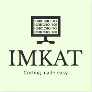
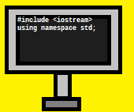

|  | IMKAT Coders is a nonprofit organisation. This organisation is founded by Ishan Kuber and his friend Arin Torney. This organisation is developed for spreading the knowledge of coding, creating tools easy for coding and developing various applications. |
 |